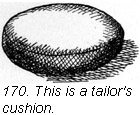
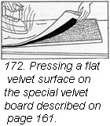
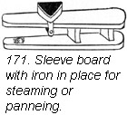
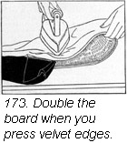
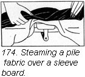
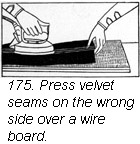

1930—Paris Frocks at Home
Lesson XII—Pressing Needs for Pressing
We want to tell you some of the things we have found out about pressing to help you give the professional appearance to your dressmaking. This chapter comes near the end of the book only because we have found no good place to put it in before. We feel that careful pressing is just as necessary to your dressmaking success as correct cutting or fitting or any of the other processes we have described.
You will need good tools.
Special boards and tailor's cushions will make your pressing much easier. There is a difference between ironing and pressing in the dressmaker's sense. When you press you seldom drag the iron along the material but you do pat the iron down on the cloth. That is, you really "press" against the cloth rather than draw a hot iron along a seam or an edge.
You need, of course, an electric iron or an ordinary six pound flat iron. A good ironing board is just as necessary. It should have a smooth, firm, but rather cushion-like surface. Ridges or hollows in your ironing board will cause the mark of the iron to be imprinted on your material.
Your ironing board should be covered with at least four thicknesses of cotton felt which may be bought at any store that carries tailor's and dressmaker's supplies. You can also buy heavy pads with accompanying unbleached muslin covers with the tapes attached. An old blanket folded over as many times as necessary may be used instead of pads. See to it, however, that there are no holes in the blanket as they will cause unevenness in the pressing surface.
A tailor's cushion makes pressing scientific.
If you have never used a tailor's cushion, you have no conception of how easily your pressing can be done. The cushion is invaluable for pressing darts and curved seams like armhole seams. The cushion is shaped like a ham and is tightly stuffed with cotton rags. Sawdust is still better if you can get it easily. To make your cushion, cut two pieces of firm unbleached muslin, eighteen by fourteen inches, cutting them somewhat narrower at one end. Round off all the edges. Stitch the seam with a 3/8" allowance, with a close machine stitch. (Ill. 170.)
Seams pressed over the cushion will open out very flat but no ridge or shiny mark from the seam allowance will show up on the right side of the garment. When pressing seams open, dampen the seam very slightly if the material is not injured by dampness, and press down on the seam using the iron carefully, taking it up and putting it down often. You may bear down heavily on the iron but you may not drag it. Very little dampness should be used on textures with lightly napped surfaces since pressing will flatten the nap.
Little or no dampness should be used on silks. A damp cloth with the water wrung out and partly dried under the iron may be used on seams between the dress and the iron, usually on the wrong side of the garment.
Special pressing technique for velvets.
For pressing velvet sleeves and short seams, a sleeve board is very helpful. The board may be attached to a standard (Ill. 171) or it may be just a plain board two or three feet long, tapering from six inches in width at one end to three inches at the other. Edges and ends should be rounded off. Your sleeve board should be padded just like your ironing board. Velvet, plush, and wool fabrics with a pile can be successfully pressed only on a wire pressing board made especially for the purpose. Short wires are set close together on a heavy canvas back. This may be thumb tacked to a flat board. The velvet is laid right side down against the wires so that when the pressing is done on the wrong side the pile sinks between the wires.
There is still another way to use the wire board. Where you wish to press a facing on a neckline or on the front of a coat made of nap fabrics remove the canvas from the board. Lay one side of the garment against the wire surface; fold the canvas over on to the faced portion of the garment. Then lay a dampened cloth against the canvas and press. (Illustration 173.)
Steaming over a sleeve board.
If you should not care to get a velvet pressing board for occasional use you may steam your velvets and napped fabrics over your sleeve board.
Invert a heated iron and slip the handle over the small end of the sleeve board. Rest the ends of the sleeve board on some books or something to hold it steady. Cover the face of the hot iron with a damp cloth and gently draw the wrong side of the velvet over the dampened muslin.
Most tailors and cleaners have large steaming boards. If you find it difficult to steam your velvet things successfully it may be of greater assistance to you in your own dressmaking to send out garments of this kind to the tailor.
Panne velvet this way.
Panne or mirror velvet has the pile partly flattened. To get this effect on an ordinary erect pile velvet, iron the surface of the velvet in the direction of the nap. Velvet after being treated this way can be pressed like any other fabric in the ordinary way.
The home dressmaker presses like a professional.
You do practically all pressing on the wrong side of the fabric although suitings and heavy coating may be pressed on the right side, steaming with a, damp cloth between the fabric and the iron. Press over this cloth until the pressing cloth is nearly dry. The heavier the fabric in the garment, the heavier the pressing cloth one uses. When wool fabric has been steamed this way on the right side, turn the garment wrong side out and press until the fabric is entirely dry.
If the material becomes shiny during the pressing remove the shine by placing a dry cloth over the shiny place. Over this place a damp cloth and with a hot iron press lightly over the spot. Where the nap has become flattened during pressing, the surface should be brushed with a stiff brush.
When pressing a skirt, turn it wrong side out and slip it over the ironing board. Pin the top and bottom of the skirt to the ironing board being careful to see that any plaits lie flat against the board. A damp pressing cloth is laid over the skirt material and pressed thoroughly until it is dry.
When pressing silk materials use a warm iron—never a hot one. The iron may be run under the plaits after the whole skirt has been pressed to fatten the part underneath.
Shrink your woolens before they get a chance.
Moisture shrinks woolens about two and a half inches to the yard. High grade woolen fabrics are usually shrunken by the manufacturer. But always play safe and buy enough to allow for possible shrinkage which may take place. Some stores will arrange to do your shrinking for you. If this service is not available you should take your material to a tailor to have it done. If this should not be possible shrink your fabric yourself.
You will need a large table, an ironing blanket and a piece of heavy unbleached muslin the width of your material and one half its length.
Wet the muslin with cold water and wring it out. Lay your woolen material face down on the table. Place the damp unbleached muslin on half of your woolen, smoothing it flat. Fold the other half of the woolen material over it and roll the material and the sponging cloth together in a tight roll. Let it lie over night covered with a piece of muslin. The next day unroll the material, pressing it dry on the wrong side as you unroll.
Woolens with a deep pile should be steamed instead of sponged. Use the same equipment as for sponging. Lay the pile fabric down on the pressing blanket with the wet muslin over it. Use a moderately hot iron and press it against the damp cloth just enough to let the steam penetrate the woolen material. Pass the iron over the muslin easily, do not let it rest anywhere lest the mark of the iron appear on the cloth.